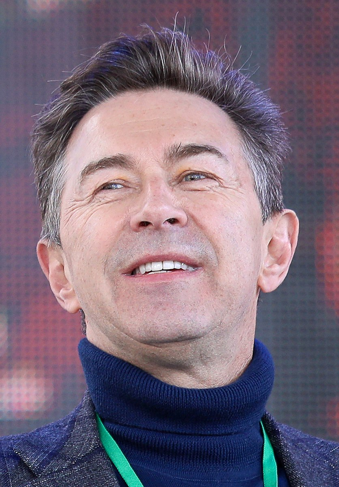

Сюткин, Валерий Миладович
Биография
Родился 22 марта 1958 года в Москве. Появился на свет в семье преподавателя Военно-инженерной академии имени Куйбышева Милада Александровича Сюткина, родившегося в Перми, и москвички Брониславы Андреевны Бржезицкой. Детство прошло на пересечении Яузского и Покровского бульваров с улицей Обуха (ныне ул. Воронцово Поле).
Музыкой начал заниматься в начале 1970-х годов, участвуя сразу в нескольких любительских группах в качестве бас-гитариста или барабанщика. Играя в школьных ансамблях, исполнял песни The Beatles, Grand Funk Railroad, Deep Purple, Led Zeppelin, Slade, Smokie. Однажды заменил заболевшего вокалиста. Так стал фронтменом. До службы в армии работал учеником повара в ресторане «Украина»
Семья
Отец Милад Александрович Сюткин> (18 августа 1929 — 8 апреля 2010) окончил в Перми техникум с отличием, и был направлен на учёбу в Москву, где окончил Военно-инженерную академию имени Куйбышева, а позже начал там преподавать. Специалист по военным подземным сооружениям, участвовал в строительстве Байконура. Строил подземные сооружения во Вьетнаме, в годы Вьетнамской войны. Умер в 2010 году. Похоронен на Введенском кладбище.
Мать Бронислава Андреевна Сюткина (дев. Бржезицкая) (род. 31 декабря 1933) — работала в МНИРТИ (Московский Научно-Исследовательский Радиотехнический Институт). Родители познакомились в танцевальном кружке, где преподавали танцоры из ансамбля Игоря Моисеева. Родители развелись, когда Валерию Сюткину было 13 лет
Личная жизнь
Дочь от первого брака — Елена Сюткина (род. 1980) — экономист, окончила экономический факультет МГУ, работает в инофирме. Внучка Василиса (род. 2014).
Сын от второго брака Максим Сюткин (род. 1987) окончил географический факультет МГУ, работает в туристическом бизнесе.
Жена Виола (род. 1975; Рига). Вместе живут с 1993 года.
Дочь Виола Сюткина (род. 1996) — окончила школу «Золотое сечение», CDL (Колледж Ди Леман) Женева, Швейцария, AUP (Американский Университет в Париже) по специальности — историк искусств — театровед, театральный факультет Сорбонны. Работает исполнительным продюсером фестиваля искусств «Черешневый лес». С 2021 года совмещает эту работу с должностью заведующей труппой Театра на Малой Бронной.
Сын Лев (Лео) Сюткин (род. 2020